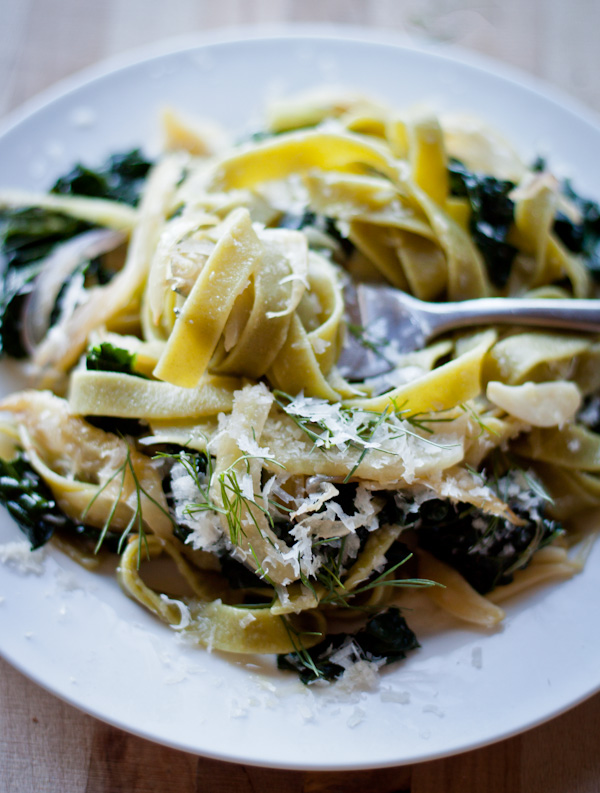

Pasta with Fennel, Lemon, and Kale

Description
A bright and healthy dish, this flavorful pasta
features an array of nutricious vegetables, from sweet
fennel to fresh, crunchy kale.
Ingredients
- 2-3 tablespoons extra virgin olive oil
- 1/2 large red onion
thinly sliced
- 2 fennel bulbs, tough outer layer
removed and fronds reserved. thinly sliced
- 3 large garlic cloves, finely slivered
- 2-3 large pinches red pepper flakes
- 1 large bunch of lacinato kaletough
skins discarded and leaves roughly chopped
- Juice of one lemon
- 10 ounces spinach fettucine
- kosher salt
- freshly ground black pepper
Garnishes
- grated Parigiano-Reggiano cheese
- fennel fronds
- chili pepper oil (optional)
Instructions
- Put a large pot of well-salted water
on to boil. Heat the olive oil in a
large frying pan over low heat. Add the
onion and cook gently for 5 minutes, or
until the onions are beginning to soften.
- Turn up the heat to medium, add the sliced
fennel, and saute gently for an additional
6 to 8 minutes, or until the fennel is tender
and slightly caramelized. Add the garlic and
red pepper flakes and continue to cook, stirring
frequently, for another minute or two. Turn off
the heat.
- When the fennel is almost cooked, add the pasta
to the pan of boiling water and cook until al dente,
adding the kale to the pasta pot about 2 to 3
minutes before the pasta is done cooking.
- Drain the pasta (reserving 1/2 cup of the starchy
cooking water) and greens thoroughly and toss with
the onion and fennel mixture in the pan -- adding
pasta water if necessary. Add the lemon juice,
season with salt and pepper, and serve immediately.
- Drizzle each serving with chili oil, fennel fronds,
and lots of grated parmigiano-reggiano cheese.